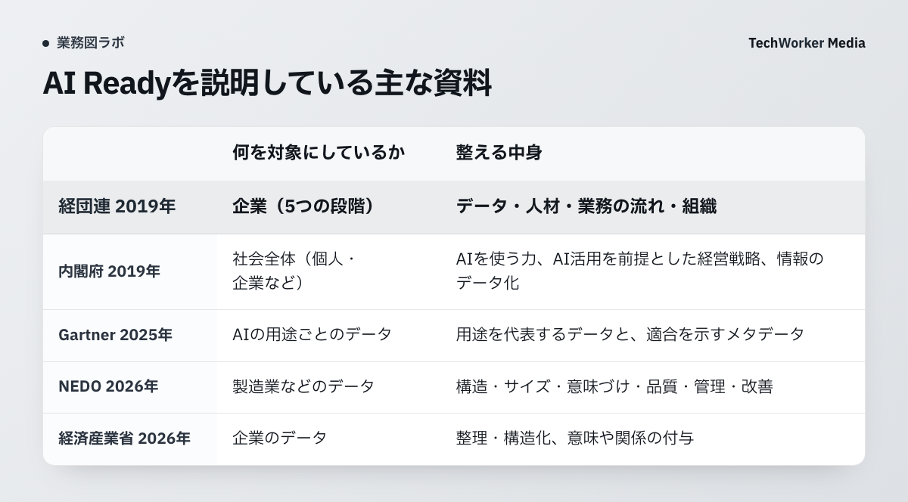
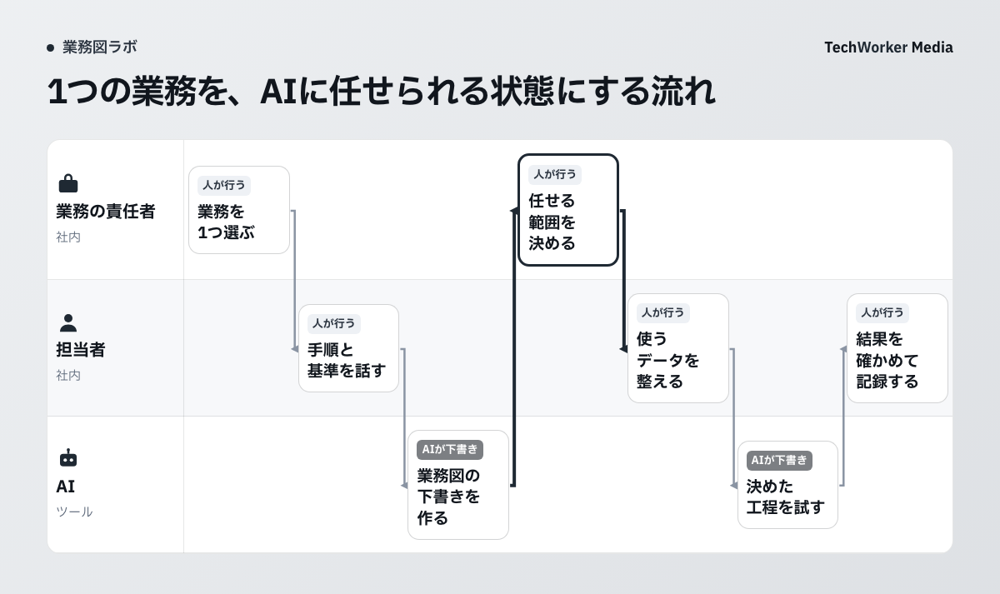

AI Ready（AI-Ready）は、AIを業務で使える状態に会社を整えることを指す言葉です。2019年に経団連の提言と内閣府の原則で使われ、2026年には経済産業省とNEDOが、会社のデータを整える取り組みの名前として使っています。
この記事では公的な定義と段階を一次資料で確かめたうえで、AIに仕事を任せるために何を整えるかを示します。要点は次の3つです。
- 経済産業省はAI-Readyを「データを整理・構造化し、活用可能な状態にすること」と定義しています。公的な定義の中心はデータです。
- データのほかに整えるものは、業務の手順、判断の基準、例外のときの扱いです。デジタル庁は2026年10月の資料で、これらをAIエージェントが実行できる形に書き出したものを「スキル」と呼んでいます。
- 始めるときは、任せたい業務を1つ選び、担当者への聞き取りで手順と基準を書き出します。データはその業務で使う分から整えます。
AI Readyとは何ですか？
会社がAIを効果的かつ安全に使えるよう、データを整理・構造化し、AIで扱える状態にすることです。経済産業省の解説は次のように定義しています。
原文（日本語）「「AI-Ready」とは、企業がAIを効果的かつ安全に活用するため、データを整理・構造化し、活用可能な状態にすることです。」
同じ解説は続けて、データに意味や関係を付け、AIが理解しやすい高品質のデータとして管理する「AI-Ready化」が重要だと書いています。
NEDOは、経済産業省と進める研究開発（GENIAC）の公募ページで、AI-Ready化の作業を次の6つと説明しています。
- 分かりやすい構造（構造化・モデリング）
- 適切なサイズ（チャンキング）
- 適切な意味づけ（ベクトル化・ラベリング）
- 高い品質（誤り・偏りの少ないデータ）
- 統一された管理（ガバナンス・セキュリティ）
- 継続的な改善（モニタリングとフィードバック）
どれもデータに対する作業です。業務の進め方を書き出す作業は、この定義には入っていません。
AI Readyという言葉は、どこから来たのですか？
日本では2019年の経団連の提言（2月）と、内閣府の「人間中心のAI社会原則」（3月決定）で使われた言葉です。2026年には、経済産業省とNEDOがデータを整える取り組みの言葉として使っています。

内閣府の原則は「AI-Readyな社会」を「AI 活用に対応した社会」と説明しています。企業の例としては「AI 活用を前提とした経営戦略に基づいたビジネスを展開」することを挙げています。
経団連は2019年2月の提言「AI活用戦略」で、企業の取り組みを5つの段階に分けました。段階の名前は原文のまま載せます。
| 段階 | 名前（原文） | 中身の例（原文から要約） |
|---|---|---|
| レベル1 | AI-Ready 化着手前 | AIとデータの議論が先に立ち、事業での使い方は話し合われていない。従業員は「勘と経験に頼る属人的な対応」をしている |
| レベル2 | AI-Ready 化の初期段階 | 小さく始め、外部の専門家の力を借りて、一部の簡単な業務をAIとデータで置き換える |
| レベル3 | AI-Ready 化が進行する | 部分の取り組みを全社に広げる。「業務フロー、事業モデルをデータ化し、AI 活用できる形に見直し」、AIを使う手順も整える |
| レベル4 | AI-Ready 化から本格的な AI-Powered 化へと展開する | 業務の流れの見直しを全社で回し、全従業員にAIの教育をする |
| レベル5 | AI-Powered 企業として確立し、影響力を発揮している | 複数の企業が連携し、業界全体の仕事を見直す |
経団連は2023年6月の提言で、次の目標を「AI-Powered（組織全体がAI活用を前提としている状況）」と書きました。一方で、10月の「AI活用戦略Ⅱ」では、2019年に示した「社会・産業・企業のAI-Ready化」などの原則は「今日もなお普遍的に適用可能である」としています。
2026年5月には、NEDOが「製造業データ等のAI-Ready化に関する研究開発（GENIAC）」の公募を審査しました。経済産業省のMETI Journalによると、フライウィールや日立製作所など9社の事業テーマが採択されています。
データが整っていないと、何が起きますか？
AIの取り組みを途中でやめることになりかねません。Gartnerは、AIに向いたデータに支えられていないAIプロジェクトの6割が、2026年までに放棄されると予測しています。
原文“Gartner predicts that through 2026, organizations will abandon 60% of AI projects unsupported by AI-ready data.”
日本語訳Gartnerは、AI-readyなデータに支えられていないAIプロジェクトのうち60%を、組織が2026年までに放棄すると予測しています。
対象は「AI-readyなデータに支えられていないAIプロジェクト」で、AIプロジェクト全体の6割ではありません。同じ発表によると、データ管理の責任者1,203人への調査（2024年7月）で、63%の組織が「AIに合ったデータ管理の方法を持っていない、または持っているか分からない」と答えています。
日本企業では、Gartnerの2025年9月の調査で、データ活用について全社で十分な成果を得ていると答えた割合は2.4%でした（2026年1月発表）。
データをどこから整えるかについて、Gartnerの日本法人は2026年5月の発表で次のように書いています。
原文（日本語）「AI-Readyにするには、社内のデータを一元管理して全体にガバナンスを適用し、メタデータを付与すればよいという誤った考えを持つ企業も見られますが、実際には、現場の課題 (ユースケース) を起点にして「適合性を証明できるデータは何か」を考える必要があります。」
データを整える範囲は、AIに任せる現場の仕事から決める、という指摘です。
AIに仕事を任せるには、データのほかに何を整えますか？
業務の手順、判断の基準、例外のときの扱いを、AIが読める形に書き出します。どの工程をAIに任せ、誰が結果を確かめるかも決めます。
デジタル庁は「ガバメントAI 源内」でAIエージェントを使えるようにする2026年10月の資料で、「スキル」を次のように説明しています。
原文（日本語）「スキル：従来、個々の職員や部局に属人的に蓄積されてきた業務手順、判断基準、参照資料、関連データ、確認方法、出力形式、例外処理等を、AIエージェントが実行可能な形で可視化・形式知化したもの」
OpenAIの企業向けの手引きも、手元にある業務手順書や問い合わせ対応の台本、規程を使って、AIが従える手順を書くよう勧めています。各手順を具体的な動作か出力に対応させ、必要な情報が足りないときなどのよくある例外は、分岐として書いておくとしています。
原文“When creating routines, use existing operating procedures, support scripts, or policy documents to create LLM-friendly routines.”
日本語訳手順を作るときは、既存の業務手順書、対応の台本、規程の文書を使い、LLMが扱いやすい手順にします。
2つの資料は「AI-Ready」という言葉を使っていません。この記事ではTechWorkerの解釈として、データを整えることに業務の書き出しを加えた状態を、AIに仕事を任せられる状態と考えます。そろえるものは次の4つです。
| そろえるもの | 中身 | 根拠にした資料 |
|---|---|---|
| データ | その業務で使うデータが、構造・意味づけ・品質・権限の点で整っている | 経済産業省・NEDO・Gartner |
| 業務の手順 | 工程ごとに、何を受け取り、何をして、何を出すかが書かれている | デジタル庁・OpenAI |
| 判断の基準と例外 | 担当者が何を見て判断するか、情報が足りないときやいつもと違うときにどうするかが書かれている | デジタル庁・OpenAI |
| 任せる範囲と確かめる人 | AIが自動で行う工程、AIが下書きして人が確かめる工程、人が行う工程が分かれ、結果を確かめる人が決まっている | TechWorkerの提案 |
自社がAI Readyかどうかは、どう確かめますか？
任せたい業務を1つ決め、次の8つの問いに答えられるかを見ます。答えられない問いが、最初に整えるところです。
この問いはTechWorkerが作った点検の例です。全社で一度に答えようとせず、業務ごとに答えます。
| 見るところ | 問い |
|---|---|
| データ | 1. その業務で使うデータの置き場所と、管理している人を言えますか |
| 2. AIに渡してよいデータと、渡してはいけないデータが決まっていますか | |
| 業務の手順 | 3. 業務の始まりと終わり、途中の工程を、担当者以外の人が説明できますか |
| 4. 工程ごとに、受け取る物と出す物が書かれていますか | |
| 判断の基準と例外 | 5. 担当者が判断に使う基準を、文章で示せますか |
| 6. 情報が足りないときやいつもと違うときに、誰へ戻すかが決まっていますか | |
| 任せる範囲と確かめる人 | 7. AIに任せる工程と、人が確かめる工程が分かれていますか |
| 8. AIの結果と、人が直したところを記録していますか |
問い3と問い5に答えられない業務は、経団連のレベル1にある「勘と経験に頼る属人的な対応」が残っている状態にあたります。データを整える前に、担当者への聞き取りから始めます。
何から始めればよいですか？
任せたい業務を1つ選び、担当者に聞き取って業務図にします。そのうえで工程ごとにAIに任せる範囲を決め、その工程で使うデータから整えます。

- 業務を1つ選ぶ：件数が多く、手順がおおむね決まっている業務から選びます。担当が1人に偏っている業務も候補です。
- 担当者に聞き取る：ふだんの手順、判断の基準、迷ったときに誰に聞くかを話してもらいます。手元の資料や過去の記録も集めます。
- 業務図にして確かめる：聞き取りと資料から、担当と工程を1枚の図に書きます。下書きはAIに作らせることもできます。担当者に見てもらって直します。
- 工程ごとに任せる範囲を決める：「AIが自動で行う」「AIが下書きして人が確かめる」「人が行う」の3つに分けます。
- その工程で使うデータを整える：任せる工程で使うデータだけを、AIに渡してよい範囲を決めたうえで、使える形に整えます。
- 小さく試して記録する：AIの結果、人が直したところ、人へ戻した件を残し、手順と基準を書き足します。
1つの業務で試して手順と基準が固まったら、同じ部署の次の業務へ広げます。経団連の段階でいえば、レベル2の小さく始める取り組みを、レベル3で全社に広げる流れにあたります。
どんな点で、つまずきやすいですか？
注意したいのは、使い道を決めずに全社のデータから整えること、手順を担当者の頭の中に残したままAIを入れること、確かめる人を決めずに任せることの3つです。
- 使い道を決めずに全社のデータから整える進め方は、Gartnerの日本法人が「誤った考え」と書いたものです。整える範囲が決まらないため、いつ終わるかが見えにくくなります。
- 手順を担当者の頭の中に残したままAIを入れても、AIは担当者がふだん何を見て判断しているかを知りません。判断の基準と例外を書き出してから渡します。
- 確かめる人を決めずにAIに任せると、AIの結果を誰が見て、どの条件で人へ戻すかが決まりません。結果に誤りがあっても、そのまま次の工程へ流れます。
よくある質問
同じ言葉の書き方の違いです。経済産業省・内閣府・経団連の資料は「AI-Ready」と書いています。
経団連の資料では、AI-ReadyはAIを使うための準備を指し、AI-Poweredは「組織全体がAI活用を前提としている状況」を指します。2019年に示した5つの段階では、レベル4からAI-Powered化へ進みます。
Gartnerの説明ではAIを使う用途を代表するデータのことです。誤りや外れ値も含めて、その用途に要るパターンがそろっていることを、メタデータを使って示します。
この記事で確かめた経済産業省・NEDOの資料では、AI-Readyは言葉の解説と研究開発の事業名として使われています。企業を認定する制度の名前としては出てきません。
AIに渡すときは、手順に加えて、判断の基準と例外のときの扱いまで書きます。デジタル庁の資料も「スキル」を、業務手順に判断基準・確認方法・例外処理などを加えて書き出したものと説明しています。
出典と確認範囲
確認日：2026年11月11日。次の資料は本文を取得して確かめました。Gartnerの英語の発表とOpenAIの手引きの日本語訳はTechWorkerによるものです（Gartnerの60%の予測を訳した日本語の発表は見つかりませんでした）。「AIに仕事を任せられる状態」の4つのもの、8つの問い、始め方の手順はTechWorkerの提案で、公的な定義ではありません。
- 経済産業省 METI Journal ONLINE「AI-Readyってなに？」（2026年8月12日）
- 経済産業省 METI Journal ONLINE「社内のデータ、AIが活用できる状態ですか？ 「AI-Ready化」に注目」（2026年6月29日）
- NEDO「製造業データ等のAI-Ready化に関する研究開発（GENIAC）」の公募ページ（2026年5月13日）
- 内閣府「人間中心のAI社会原則」（2019年3月29日 統合イノベーション戦略推進会議決定）
- 経団連「AI活用戦略～AI-Readyな社会の実現に向けて～」（2019年2月19日）
- 経団連「AI活用によるSociety 5.0 for SDGsの実現に向けて」（2023年6月9日）
- 経団連「AI活用戦略Ⅱ －わが国のAI-Powered化に向けて－」（2023年10月17日）
- Gartner「Lack of AI-Ready Data Puts AI Projects at Risk」（2025年2月26日）
- Gartner ジャパン「日本企業のデータ活用に関する最新の調査結果を発表」（2026年1月8日）
- Gartner ジャパン「日本企業がD&AとAIによる変革を成功させるために押さえておくべき指針を発表」（2026年5月20日）
- デジタル庁「ガバメントAI 源内における「AIエージェント」利用環境の導入」（2026年10月20日）
- OpenAI「A practical guide to building agents」（PDF、作成日は2025年4月7日）